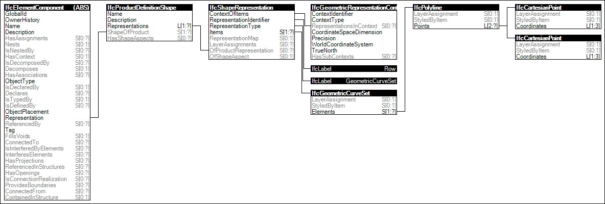

Link to this page
Link to this pageA symbolic representation is defined for a row of fasteners or several rows of fasteners within a single instance of a product. Such rows or arrays may contain possibly large numbers of individual pieces.
Each IfcPolyline starting point represents where the head of a fastener is located. The local placement of the element shall be located and oriented such that the local z axis is parallel with the axes of the fasteners (bolts, nails, staples or similar).
Figure 44 illustrates an instance diagram.
 |
Figure 44 — Row Geometry |